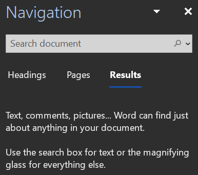

Finding, Replacing, and Proof-Reading Text
Find and Replace
Word lets you search for text in your document (instead of you spending hours finding it in a 1000-page document for example.)
To find text, go to the Home tab > Editing group > Find button to open the Navigation Pane on the screen's left side:

The Navigation Pane on the left side of the screen. Miriam Briskman, CC BY-NC 4.0.
Click in the search box and type the text you are looking for to let Word find all the instances of that text in the document!
 These notes by Miriam Briskman are licensed under CC BY-NC 4.0 and based on sources.
These notes by Miriam Briskman are licensed under CC BY-NC 4.0 and based on sources.